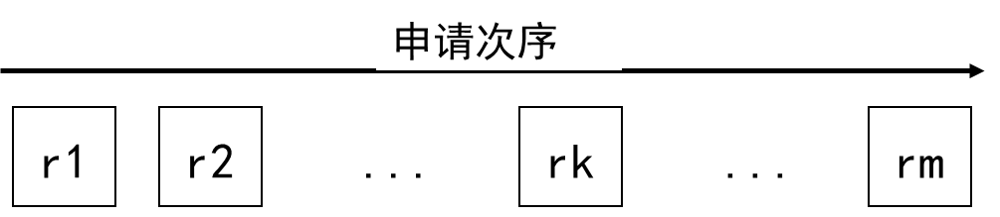
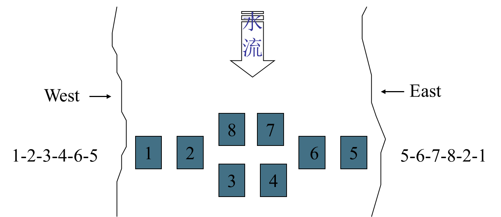

死锁与饥饿
[!note]
- 死锁：竞争资源引起，无限等待，可检测，两个及以上的进程
- 饥饿：资源分配策略不公平引起，不一定处于等待状态，可能忙等，不确定性
- 死锁和饥饿都是由于进程竞争资源而引起的
[!important]
- 死锁，饥饿，死循环的区别
- 死锁:两个或两个以上的进程互相等待对方手里的资源，导致各进程都阻塞，无法向前推进的现象。
- 饥饿:进程由于长期得不到想要的资源，某进程无法向前推进的现象。
- 死循环:某进程执行过程中一直跳不出某个循环的现象。有时是因为程序逻辑bug 导致的，有时是程序员故意设计的。
死锁
死锁的定义
- 一组进程中的每一个进程，均无限期地等待此组进程中某个其他进程占有的，因而永远无法得到的资源，这种现象称为进程死锁
- 当死锁发生后，参与死锁的进程将一直等待下去，除非有来自参与死锁进程之外的某种干预，即死锁会导致进程无限等待
- 死锁时刻：
- 无限等待发生时
- 等待发生前（已注定死锁）
[!tip]
- 参与死琐的进程至少有二个；
- 每个参与死锁的进程均等待资源；
- 参与死锁的进程中至少有两个进程占有资源；
- 死锁进程是系统中当前进程集合的一个子集。
死锁类型
[!note]
死锁产生原因：
- 时间上，进程调度时机不合适
- 空间上，独占资源分配不当，互斥资源部分分配又不可剥夺，根本原因就是资源不足
竞争资源引起的死锁
- 不同种资源
- 同种资源
进程通讯引起的死锁
P1：receive(P2,M1);
P2: receive(P3,M2);
P3: receive(P1,M3);
其他原因引起的死锁
After you / after you
死锁的条件
[!important]
Coffman条件（必要条件）
- 资源独占（mutual exclusion）/ 互斥访问
- 不可抢占（non preemption） / 非剥夺式
- 保持申请（hold-while-applying）
- 循环等待（circular wait）
当每类资源只有一个实例时，Coffman条件为充要条件。
破坏上述任意一个条件可以消除死锁
死锁的处理
资源分配图
- 圆圆的进程方方资源
定义: G=(V,E), V=PÈR, P={p1,p2,…,pn}, R={r1,r2,…,rm},
E={(pi,rj)}&&{(rj,pi)}, pi属于P, rj属于R.- 申请边(pi,rj): pi申请rj；
- 分配边(rj,pi): rj分配pi;
- 申请：由pi向rj画一条申请边，如可满足，改为分配边。
- 释放：去掉分配边。
[!important]
- 资源分配图的约简
- 寻找一个非孤立且没有请求边的节点pi, 若无算法结束
- 去除pi的所有分配边使其成为一个孤立节点;
- 寻找所有请求边都可满足的进程pj, 将pj的所有请求边全部改为分配边;
- 转步骤1
- 若算法结束时,所有节点均为孤点,则称资源分配图是完全可约简的
所以得到死锁定理：S为死锁状态的充分必要条件是S的资源分配图不可完全约简
死锁预防
- 对进程有关资源的申请活动加限制，即可保证没有死锁发生，即破坏死锁发生的必要条件
预先分配法
- 进程运行前申请所需全部资源
- 系统对于分配如果能够满足进程所需全部资源，则分配
- 进程在投入运行前已经占有所需要的全部资源，在运行期间不会发出资源申请命令
- 破坏“
hold-and-wait”条件，即保持且申请条件
有序分配法
- 对于资源集
R={r1,r2,…,rn}，事先将所有资源类排序 - 每个资源类赋予唯一的整数
- 规定进程必须按照资源编号从小到大的次序申请资源

- 进程pi可以申请资源rj中的实例和 对于任意
rl，pi当前已占有rl,F(rl)<F(rj)等价
[!note]
- 一个进程可以申请某一资源类
ri中的资源实例的充要条件是它已经释放了资源类rj中的所有资源实例，这里F(ri)<=F(rj)- 如果遵从这个条件，就不会发生死锁
- 如果进程需要同一资源类中的若干个资源实例，则它必须在一个命令中同时发出请求
- 有序分配策略通过破坏循环等待条件来预防死锁的发生。
死锁避免
[!note]
- 保证系统不进入死锁状态的动态策略
- 对于进程发出的每一个系统能够满足的资源申请命令实施动态检查，并根据检查结果决定是否实施资源分配
[!tip]
系统处于安全状态：即如果存在一个由系统中的所有进程构成的安全进程序列
<p1,p2,…,pn>，那么系统处于安全状态。但是安全序列不唯一进程序列
<p1,p2,…,pn>安全，即p1,p2,…,pn可依次进行完

银行家算法
- 进程：事先申明所需资源最大量（并不分配）
Claim=Max - 系统：对每个可满足的资源申请命令进行安全性检查。安全则分配
//数据结构：
Available: array[1..m]of integer; //系统可用资源
Claim: array[1..n,1..m]of integer; //进程最大需求
Allocation: array[1..n,1..m]of integer; //当前分配
Need: array[1..n,1..m]of integer; //尚需资源
Request: array[1..n,1..m]of integer; //当前请求
//临时变量：用于安全性检测
Work: array[1..m]of integer;//记录可用资源
Finish: array[1..n]of boolean;//记录进程是否可以执行完
资源分配算法
- 当进程请求资源时，首先判断当前请求资源是否小于等于其所需资源
- 紧接着如果满足则继续判断请求资源是否小于等于当前空闲资源
- 满足则预分配再进行安全性检测，不安全则回溯状态
安全性检测算法
- 给临时变量赋值
- 找到满足条件的即所需资源小于等于可用资源的进程
- 满足则完成该进程，增加可用资源继续找到可完成进程
- 最后如果所有进程都可以完成则安全
[!note]
银行家算法的保守性:
- 实际上，如果在不安全状态真正实施资源分配，系统不一定处于死锁状态。因为分配资源后安照，死锁状态是不安全状态的真子集
- 即死锁状态包含于不安全状态，但是安全状态一定不会发生死锁
死锁发现
- 死锁发现：如果一个系统中既未采用死锁预防策略，也未采用死锁避免策略，则系统有可能发生死锁
死锁检测算法
类似于银行家算法的安全检测算法，但是也可以通过资源分配图化简检测是否存在死锁状态
//数据结构：
Available: array[1..m]of integer;
Allocation: array[1..n,1..m]of integer;
Request: array[1..n,1..m]of integer;
//临时变量：
Work: array[1..m]of integer;
Finish: array[1..n]of Boolean;
- 只检测占有资源的进程，初始化时：
Finish[i]=true, for Allocation[I]=0
[!note]
令P是所有进程的集合，P’包含于P，是所有占有资源的进程集合，则:
P死锁等价于P’死锁
死锁的恢复
- 重新启动
- 终止进程：(1) 一次性全部终止；(2) 逐步终止(优先级，代价函数)
- 剥夺资源(resource preemption，(1) 逐步剥夺 (2) 一次剥夺
- 进程回退：参与死锁的进程回退到没有发生死锁的某个点，并由此点开始继续执行
鸵鸟算法
一个忽略潜在问题的一种算法策略，这种策略对计算机程序可能出现的问题采取无视态度（类似于鸵鸟在遇到危险时将头埋在地里，装作看不见）。鸵鸟算法的使用前提是，问题出现的概率很低。
饥饿与活锁
[!note]
- 饥饿：当等待时间给进程推进和响应带来明显影响时,称发生了进程饥饿
- 饿死：饥饿到一定程度的进程所赋予的使命即使完成也不再具有实际意义时称该进程被饿死
- 没有时间上界的等待：排队等待、忙式等待
- 忙式等待条件下发生的饥饿,称为活锁(live lock)
活锁
- 排队等待：当进程申请资源不能满足时，便进入等待状态，待资源得到时被唤醒，这种等待是排队等待
- 忙式等待条件下发生的饥饿,称为活锁(live lock)。活锁与死锁不同，活锁可能会解除
过河问题
- 有南北走向的河流如下图所示，河中有用石块搭成的便桥
- 每个石块上最多容纳一个过河者，两个相邻石块的间距恰好为一步

- 死锁分析：
- 当2个方向各有3人踏上石块时，必发生死锁
- 当2个方向各有1人分别踏上1、2或者5、6时，也会发生死锁
- 死锁预防
- 最简单的方式规定东、西两岸人员不能同时过河，但这可能导致饥饿或饿死，同时也影响并行度
- 根据资源数量，限制同时过河的人数在5个以内，这时至少有一个方向的过河人数不超过2个，当他们分别踏上3、4或者7、8石块时，对另一方向的过河人无影响
- 其次，对两岸竞争的1、2和5、6两对石块，采用有序分配法，即按1、2和5、6次序申请
简单组合资源死锁的静态分析
- 可复用资源：一次只能分配给一个进程使用的资源
- 组合资源：相对独立的若干资源构成的资源集合，每个相对独立的资源称为子资源
- 同种组合资源：由相同类型的子资源构成的组合资源.
- 每类子资源只有一个资源实例称为简单组合资源
[!important]
- 条件：已知各个进程有关资源的活动序列
- 判断：有无死锁可能性
- 步骤1：以每个进程占有资源，申请资源作为一个状态，
- 记作：
(pi：aj：ak1,…,akn)=(进程：请求：占有);- 步骤2：以每个状态为一个节点；
- 步骤3：如p1所申请资源为p2所占有，则由p1向p2画一有向弧(相同进程间不画)；
- 步骤4：找出所有环路；
- 步骤5：判断环路上状态是否能同时到达，如是有死锁可能性，否则无死锁可能性。
- (1)环路中有相同进程，不能到达；
- (2)环路中有相同被占有资源，不能到达.
同种组合资源死锁的必要条件
[!NOTE]
当S<M+N时，一定没有死锁；
当S>=M+N时，至少有一个交叉有死锁。
- M：资源数量
- N：使用该类资源进程的数量
- S：所有进程所需要该类资源的总量
反过来求当N个进程，每个进程所需同类资源为x1,x2, ... , xn，则当资源总数M大于等于
∑(Xi-1)+1这里考虑导致死锁的最坏情况，即每个进程都差一个资源就可以运行，所以在此基础上增多一个资源就可以打破死锁
评论区 - 05_死锁与饥饿